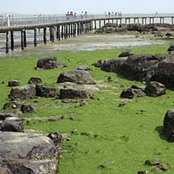
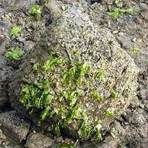
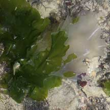
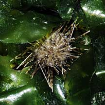
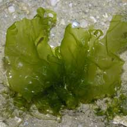
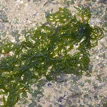

|
|
|
green
seaweeds text index | photo
index
|
| Seaweeds > Division Chlorophyta |
|
Sea
lettuce Ulva sp.* Family Ulvaceae updated Jan 13
Where seen? Sea lettuce looks just like its namesake land plant. Seasonally, there is an explosive growth or 'bloom' of this seaweed. It is then so abundant that a thick soft 'green carpet' of washed up sea lettuce blankets the high shores. Be careful! The seaweeds can be slippery and conceal rocks and other things that might trip you or poke you. Also, many animals hide under this seaweed. Try not to step on this 'green carpet'. Features: A thin blade which is only two cells thick! This allows sea lettuce to grow rapidly in nutrient-rich water as it has a high surface to volume ratio. Compared to most other seaweeds, sea lettuce species can better tolerate being exposed during low tide. So it grows near the shore. The blade is attached with a small holdfast, usually embedded in the sand or attached to a hard surface. During a 'bloom', large amounts can float freely and blanket a large stretch of the shore. Usually bright green, sometimes with a yellowish tint. Which Ulva? According to AlgaeBase, there are more than 120 current Ulva species. Species used to be determined by the structure of the blade, cells and other tiny features. However, recent studies show that these can change with age, reproductive state and environmental factors including being chewed upon by predators. So it's really tricky trying to determine species of Ulva. Some form sheets that are flat, thin and translucent, glossy and smooth. Usually entire without many holes. The edges are sometimes ruffled. Can grow to 10cm wide or more. Usually bright green. Some form flat strips, ribbons or net-like, thin and translucent, glossy and smooth with many holes. Often crinkled into twists, the strips are narrow (1- 2cm wide) and may be 20cm or longer. Smell of the sea: When the shores are covered with sea lettuce, you can smell the distinctive aroma of seaweed gently toasting in the sun. This is truly the smell of the sea! Sea lettuce babies: Sometimes, you might come across a sea lettuce blade that is white or transparent. This could be because the sea lettuce has become fertile and converted some of its cells into reproductive cells and released these cells. Often, this happens along the edge of the blade. Role in the habitat: Sea lettuce is one of the seaweeds eaten by the Green turtle (Chelonia mydas), as well as other creatures. The dense tangle of seaweed also provides plenty of hiding places for the small animals that live in the seagrass lagoon. Human uses: Sea lettuce is fed to pigs and livestock. In the past, they were collected in boatloads in the Straits of Johor, washed in freshwater then cooked and fed to pigs. Sea lettuce is cultivated for animal feed in some places. In some places, it is also eaten by humans, as a salad or mixed with other vegetables. The species that are used commercially include U. lactuca, U. pertusa and U. reticulata. It is also reported to have antibacterial properties, and to be used to treat goiter, gout, scrofula, burns and other irritants. Sea lettuce also makes good packing material to cover more valuable Caulerpa seaweeds during shipping and transport, or to cover fish for sale. As sea lettuce tends to grow well in polluted waters, it is also used as an indicator of water quality. |
 May sometimes form a thick green carpet on shores. Chek Jawa, Jan 09  Labrador, Mar 05  Transparent blade: reproducing? Labrador, May 05  Tiny black sea urchin in sea lettuce. Changi, Jul 08  Pipefish camouflaged on sea lettuce. Changi, Apr 05 |
|
 Some form sheets. |
 Others are ribbon-like or net-like. |
*Species are difficult to positively identify without close examination of internal parts.
On this website, they are grouped by external features for convenience of display.
| Sea lettuce on Singapore shores |
| Photos of Sea lettuce for free download from wildsingapore flickr |
| Distribution in Singapore on this wildsingapore flickr map |
| Ulva
species recorded for Singapore Pham, M. N., H. T. W. Tan, S. Mitrovic & H. H. T. Yeo, 2011. A Checklist of the Algae of Singapore. +Lee Ai Chin, Iris U. Baula, Lilibeth N. Miranda and Sin Tsai Min ; editors: Sin Tsai Min and Wang Luan Keng, A photographic guide to the marine algae of Singapore, 2015.
|
Links
|
|
|